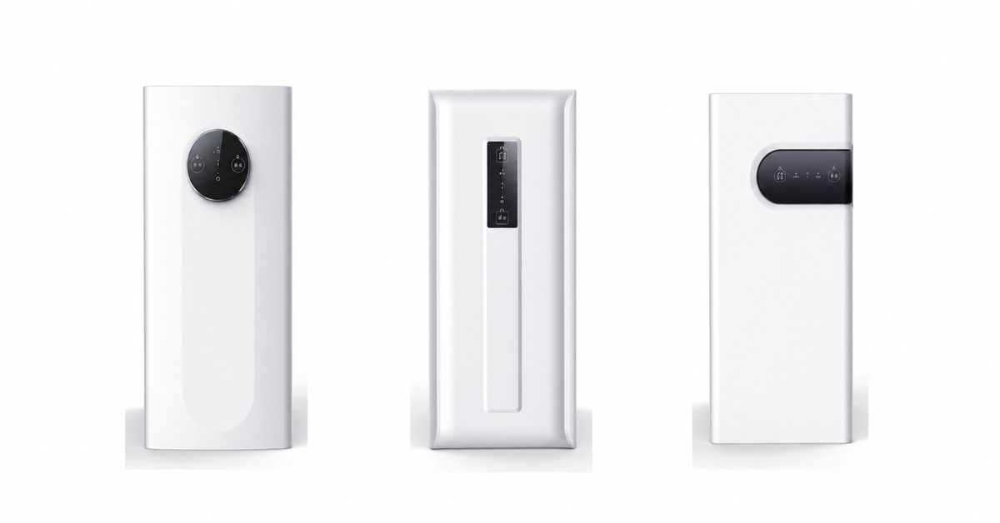
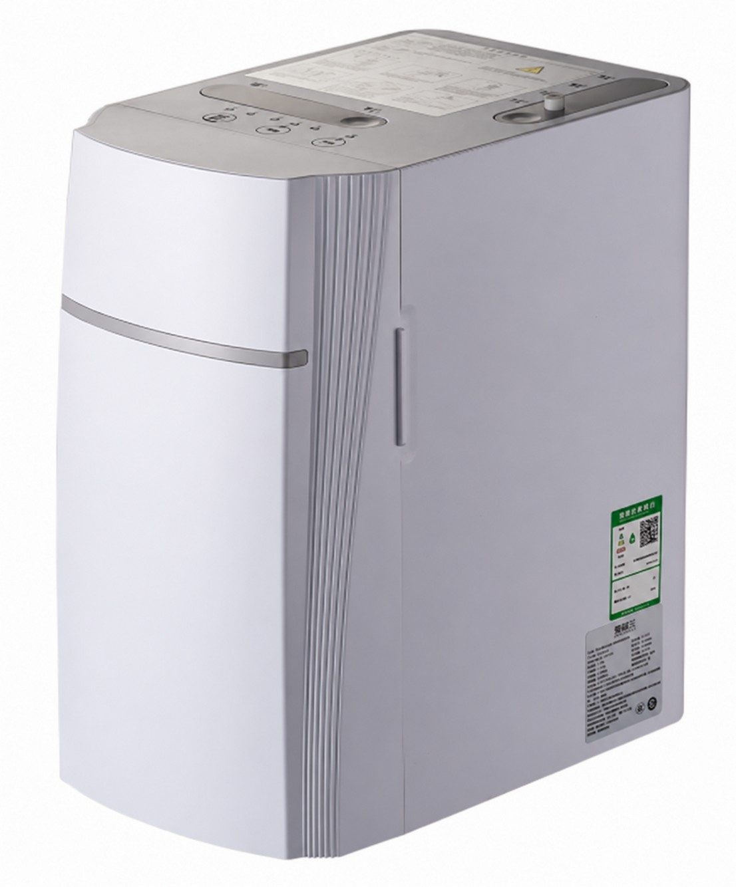
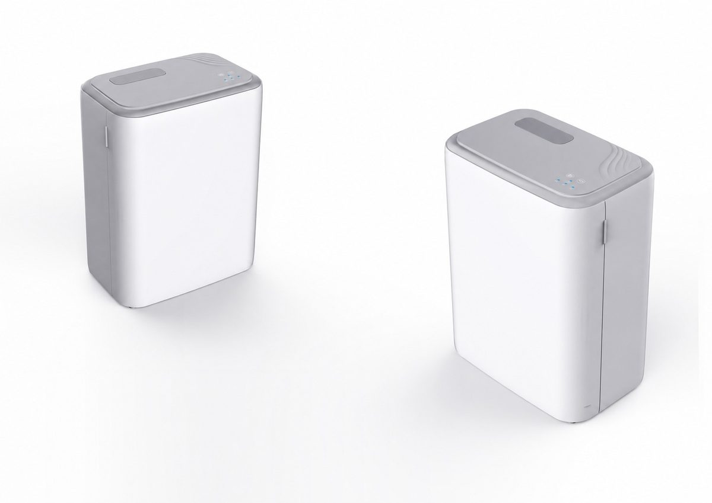
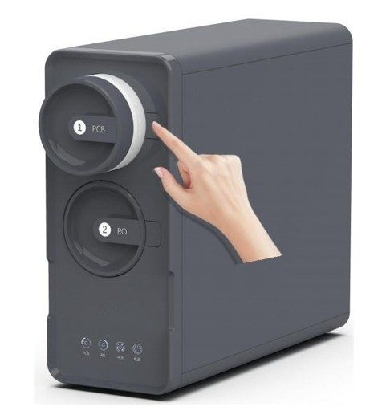
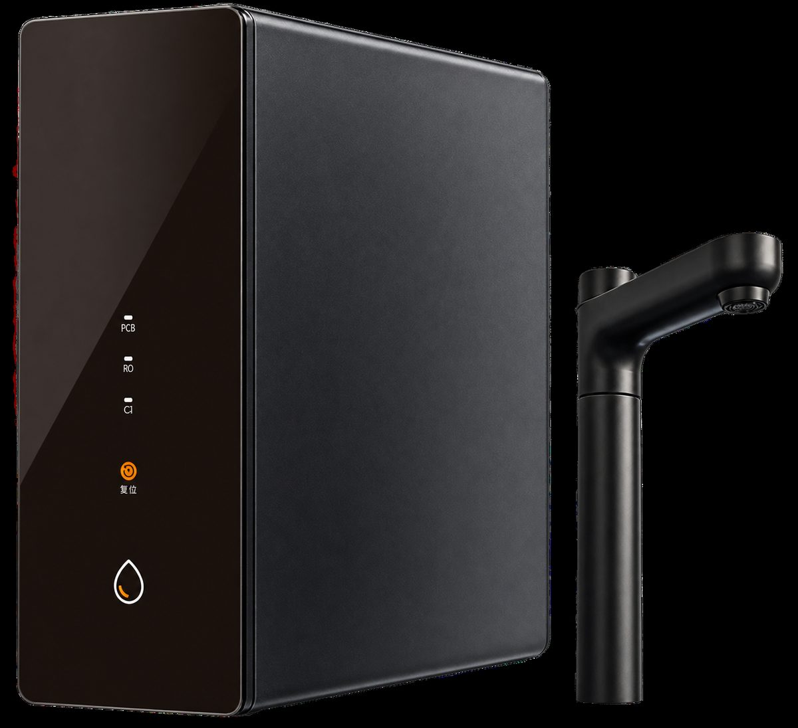
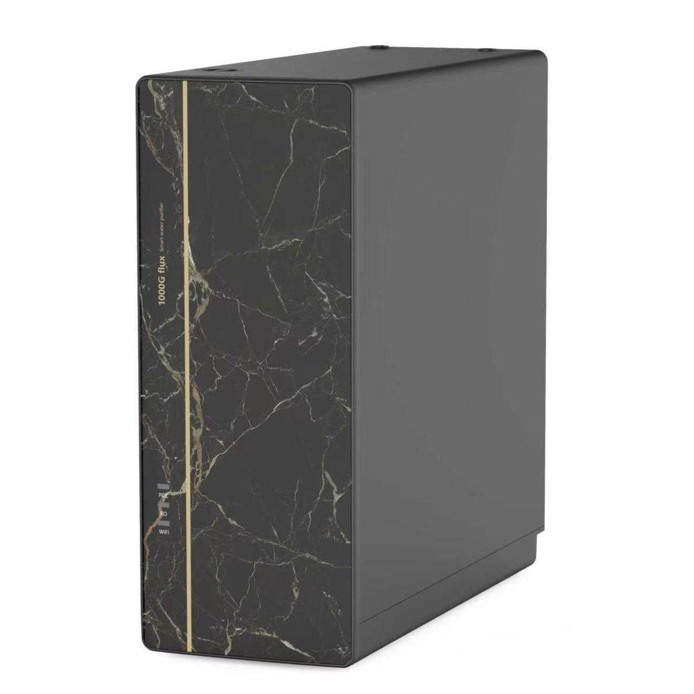
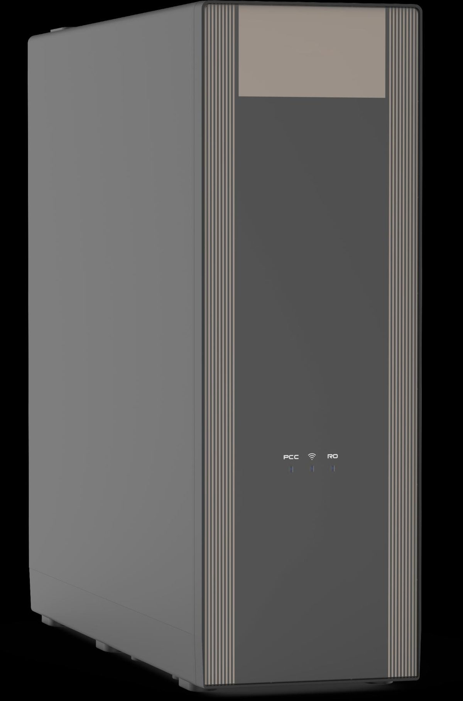
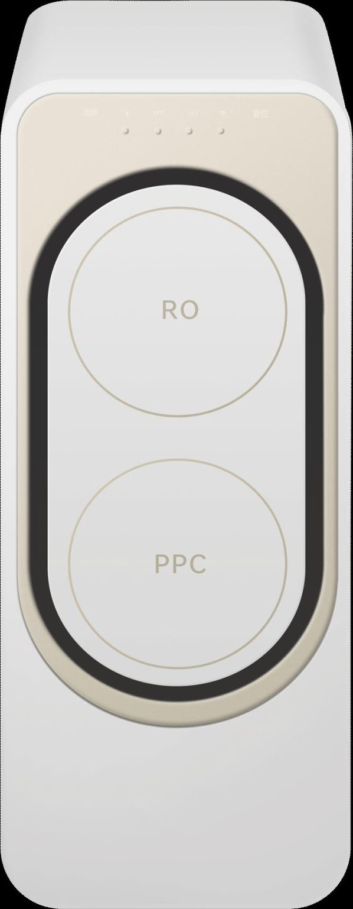
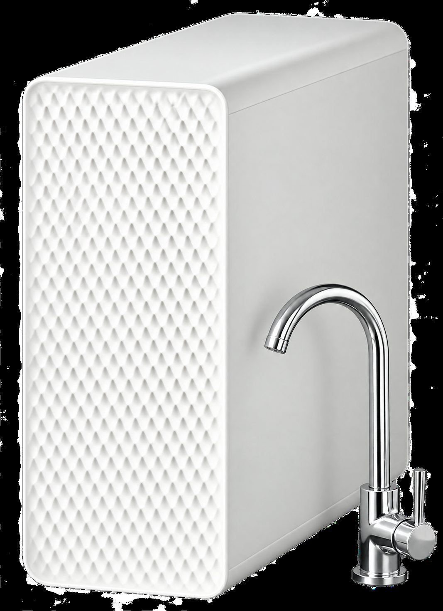
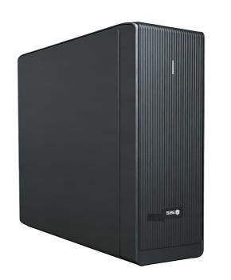

Under-SinkRP-U07
800 GPD under-sink RO purifier
Get a QuoteHome / Products / Under-Sink RO Systems
Under-sink RO purifiers and companions for kitchen use, supplied as OEM / ODM models for brand owners and distributors.
17 models. Specifications are confirmed per model and order.

Under-Sink800 GPD under-sink RO purifier
Get a Quote
Under-SinkUnder-sink RO with storage heating
Get a Quote Under-Sink
Under-SinkHigh-capacity front-access RO purifier
Get a Quote Under-Sink
Under-SinkCompact front-access RO purifier
Get a Quote
Under-SinkThree-cartridge RO purifier
Get a Quote
Under-SinkTool-free pull-out cartridge RO system
Get a Quote
Under-SinkDual-drive extended-output RO system
Get a Quote Under-Sink
Under-SinkCompact two-cartridge RO purifier
Get a Quote Under-Sink
Under-SinkThree-cartridge high-flow RO purifier
Get a Quote Under-Sink
Under-SinkSlim dual-outlet RO purifier
Get a Quote
Under-SinkUnder-sink hydrogen-water RO purifier
Get a Quote
Under-SinkRO with instant-hot faucet and chilled
Get a Quote
Under-SinkHigh-capacity household RO purifier
Get a Quote
Under-SinkCompact two-cartridge RO platform
Get a Quote
Under-SinkUnder-sink cooling companion
Get a Quote Under-Sink
Under-SinkStainless-steel instant-heating faucet
Get a Quote Under-Sink
Under-SinkTwin-housing high-flow pre-filter
Get a Quote